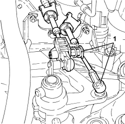
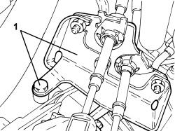
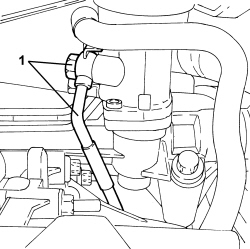
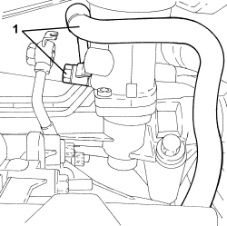
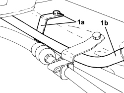
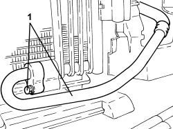

4130B43 RETURN PIPE FROM POWER ASSISTED STEERING BOX TO HEAT EXCHANGER - R.R.
- Path
- Procedures > 41 STEERING UNIT > 4130 POWER STEERING > 4130B POWER STEERING HYDRAULIC SYSTEM > 4130B43 RETURN PIPE FROM POWER ASSISTED STEERING BOX TO HEAT EXCHANGER - R.R.
- Kind
- repair procedure (removal / refitting; the operation number is the code)
- Applies to
- engines: 3.2 JTS; all production periods
- Interactive page
- https://sloeber94.github.io/elrnDB-aBrrSpdr/en/#/946002184
Applies to: engines: 3.2 JTS; all production periods
 Removing
Removing
 Refitting
RefittingOp. 7055B54 UNDER ENGINE PROTECTION/GUARD - R.R.
- Draw off the power assisted steering fluid from the reservoir using a suitable syringe.
1. Disconnect the gear selector and engagement cables.

Applies to: engines: 3.2 JTS; all production periods
1. Unscrew the gear selection and engagement cable reaction bracket fastenings and move aside.

Applies to: engines: 3.2 JTS; all production periods
1. Unscrew the oil inlet pipe fittng from the power steering box and move aside.

Applies to: engines: 3.2 JTS; all production periods
1. Unscrew the oil outlet pipe fitting from the power steering box.

Applies to: engines: 3.2 JTS; all production periods
1. Unscrew the bracket fastening screw (1a) of the pipe from the power steering box to the radiator (1b) to the front suspension beam.

Applies to: engines: 3.2 JTS; all production periods
1. Undo the bolt and disconnect the pipe from the power assisted steering box to the radiator, radiator side and remove it complete with O-ring.

Applies to: engines: 3.2 JTS; all production periods
Refitting
Removing- Fit a new o-ring to the pipe from the power steering box to the radiator.
- Place the pipe from the power assisted steering box to the radiator, radiator side in position and secure it using the bolt.
- Tighten the bracket fastening screw of the pipe from the power steering box to the radiator to the front suspension beam.
- Tighten the oil outlet pipe fitting from the power steering box.
- Refit the fluid input pipe to the power steering pipe in its saet and tighten the fitting.
- Refit the bracket with gear selection and engagement cables in its seat and tighten the fasteings.
- Connect the cables to the gear selector and engagement unit.
Op. 7055B54 UNDER ENGINE PROTECTION/GUARD - R.R.
Op. 0010T71 POWER STEERING FLUID CHECK LEVEL AND TOP UP IF NECESSARY